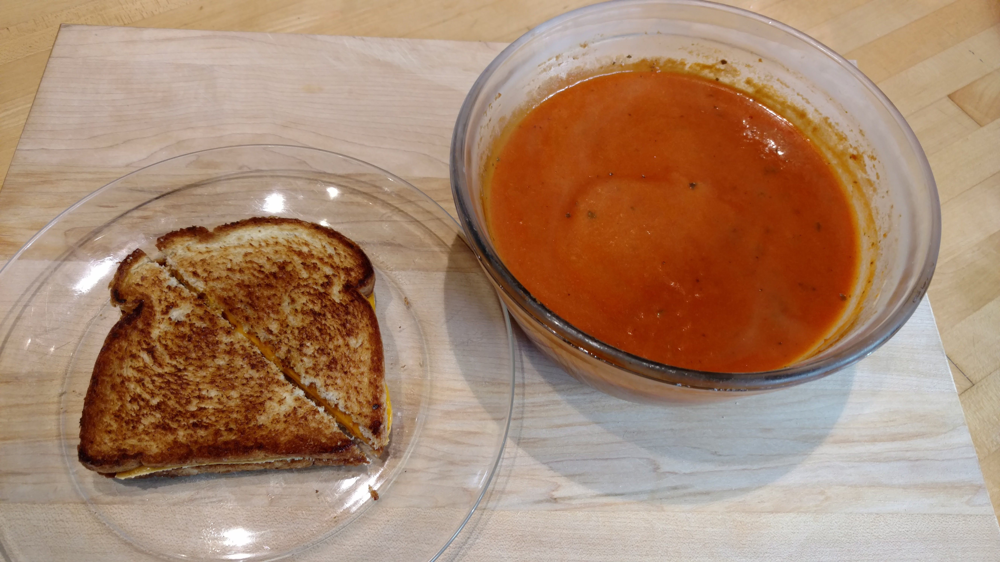

We can't always make our own soup. It's sad to admit, but it's something we must all accept. So, we occasionally do have to go -buy- soup. Considering soup is often absolutely laden with sodium and fat (I may love me some chicken and stars, but I'm still lookin at you Campbell's), we have to be picky about what soups we do choose to eat.
I am a huge fan tomato soup, it's such a classic. I was at Wegman's last week (being tempted at every corner by amazing goodies) and realized they had a decent selection of their house brand pre-prepared soups. They were refridgerated which is always a good sign that they will have less sodium and less preservatives. It looked pretty good and came in a ready to microwave cup so I sent for it.
When we look at this label, we see this soup is pretty healthy! (What a relief). One cup is about 110 calories, maing the whole thing is 220. That a pretty great number for a light lunch. It is a little fatty, but as the nutritionists keeps saying, fat is back! Sodium is high, but certainly not nearing Top Ramen levels! Drink a few extra glasses of water with the soup wou'll be all set. All that being said, I'm an absolute sucker for tomato soup and grilled cheese. I fried one up using some olive oil, a couple slices of american cheese, and lo-cal bread (I'm obsessed with this stuff, 45 calories a slice is just too amazing). The soup got 3 thumbs up, it looked good, passed the healthy test, and tasted fabulous!
